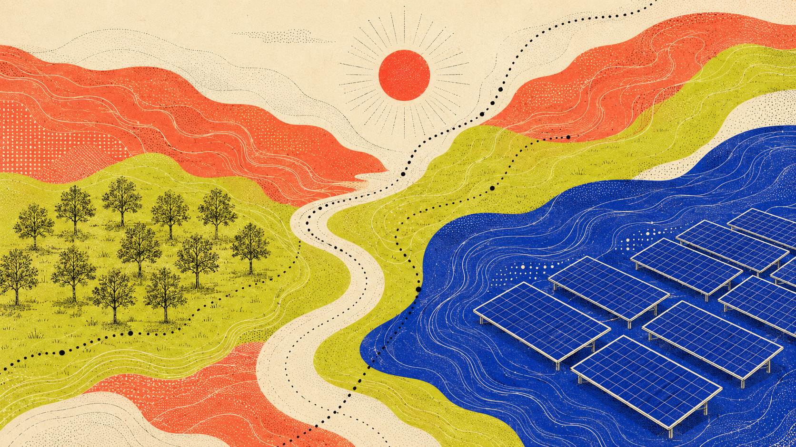
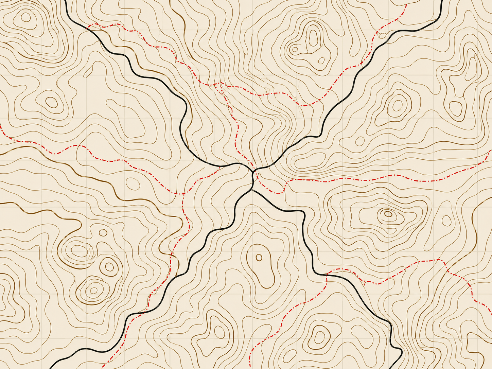
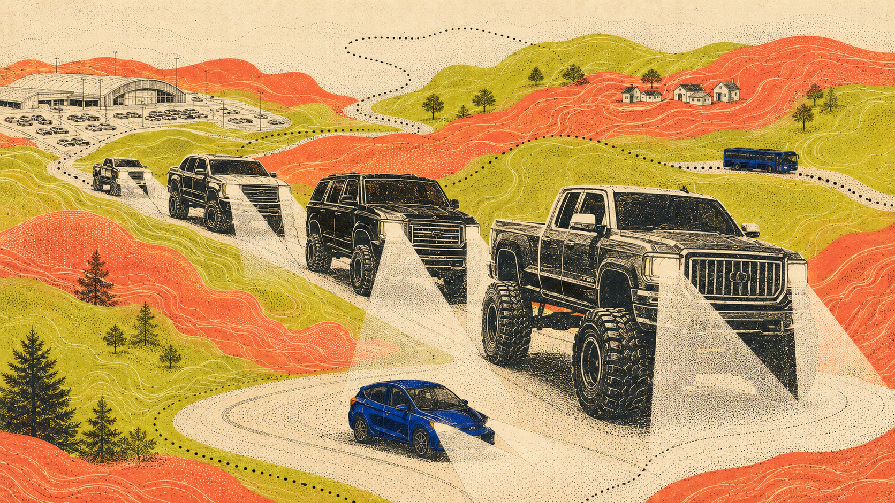
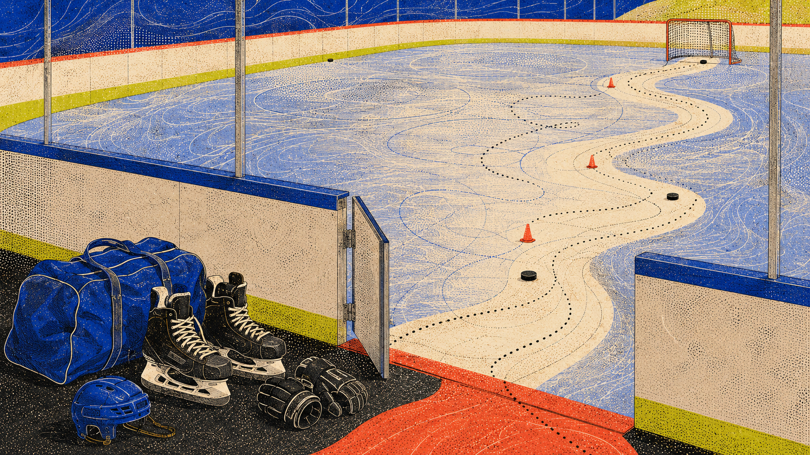

001HL-LC-001

The Environmentalism Gettysburg Doesn't Talk About
Land & Climate

Hjernelandet Central Archive · Est. 2026
Reports from the provinces of the mind.
Filed observations, local truths,
and ongoing investigations.
5 dispatches shown
Current ledger




Registry notice
Try a broader search or return to the complete registry.
End of current record